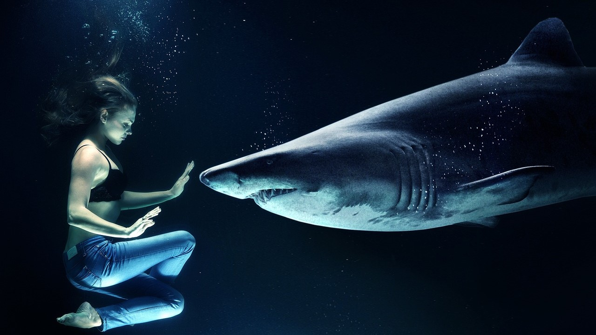
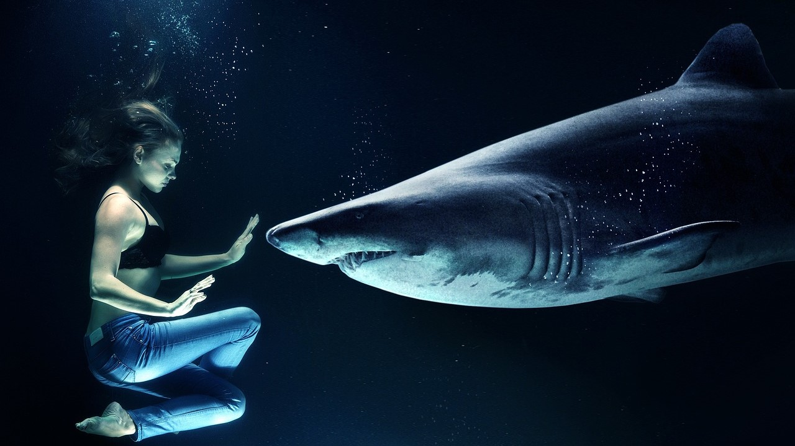

Üdvözöljük a számítógépes grafika világában, ahol a technológia és a kreativitás találkozik! A számítógépes grafika ma már számos iparág alapvető eszköze, legyen szó művészetről, játékfejlesztésről, térinformatikáról vagy webdesignról. Az oldalon részletesen bemutatjuk a grafikai hardvereket, a digitális rajzolást, a 2D grafikát és sok más izgalmas témát, hogy Ön is megismerhesse, hogyan használhatók ezek a technikák és eszközök a legkülönbözőbb célokra.
A grafikai hardverek fejlődése forradalmasította a számítógépes grafikát: a modern GPU-k (grafikus feldolgozó egységek) lehetővé teszik a gyors renderelést és a valós idejű grafikát, ami elengedhetetlen a videójátékokhoz és a 3D modellezéshez. A professzionális digitális rajztáblák és monitorok pontos és részletes rajzolást tesznek lehetővé, így a művészek és tervezők könnyedén alkothatnak kézi rajzolással egyenértékű digitális műveket. Ezek a hardverek biztosítják a precizitást és a teljesítményt, amelyre a kreatív projektek során szükség van.
A 2D grafika és digitális rajzolás a számítógépes művészet alapjaihoz tartoznak. A digitális rajzolás szoftverek, mint például az Adobe Illustrator vagy a CorelDRAW segítségével egyedi karaktereket, logókat és illusztrációkat készíthetünk. Ez különösen népszerű a rajzfilmiparban és a webdesignban, ahol fontos a karakteres, könnyen felismerhető stílus. A 2D grafikai technikák lehetővé teszik az egyszerű, de látványos vizuális megoldásokat, amelyek széles körben alkalmazhatók az animációktól kezdve a platformjátékok fejlesztéséig.
A térinformatika (GIS) területe és a webdesign szintén nagyban támaszkodnak a számítógépes grafikára. A GIS rendszerek különböző helyadatokat jelenítenek meg, segítve a pontos térképészeti és navigációs megoldások létrehozását, míg a webdesign célja az esztétikus és felhasználóbarát online felületek kialakítása. A platformjáték-fejlesztés pedig mindezen területek ötvözete, amelyhez kreatív karakterek, dinamikus animációk és intuitív dizájn szükséges. Fedezze fel oldalunkon, hogyan járul hozzá a számítógépes grafika mindezekhez az izgalmas és innovatív területekhez!
A számítógépes grafika alapjai közé tartozik a képek, animációk és más vizuális elemek létrehozásának és manipulálásának tudománya és művészete. Ez a terület különféle technikákat és algoritmusokat használ a képek generálására, amelyeket képernyőn vagy nyomtatott formában jelenítenek meg. A számítógépes grafika magában foglalja a geometriai modellezést, a színtudományt, a képfeldolgozást és a vizuális megjelenítést, és számos alkalmazási területe van, beleértve a játékfejlesztést, a filmipart, az orvosi képalkotást és a virtuális valóságot.
 

A számítógépes képszerkesztés a digitális képek létrehozásának, manipulálásának és optimalizálásának folyamata, amely számos területen, például a fotográfiában, grafikai tervezésben és vizuális művészetekben kap fontos szerepet. Az ilyen szoftverekkel, mint az Adobe Photoshop, GIMP vagy Affinity Photo, a felhasználók finomhangolhatják a képek színeit, javíthatják a minőséget, és kreatív effektekkel láthatják el azokat.
A filmes illusztrátorok kulcsszerepet játszanak a filmkészítés folyamatában, mivel ők hozzák létre a film látványvilágának elsődleges koncepcióit és vizuális terveit. Ezek a művészek részletes storyboardokat, koncepciórajzokat és látványterveket készítenek, amelyek segítenek a rendezőknek, producereknek és más kreatív szakembereknek elképzelni a jelenetek végső kinézetét.


A kétdimenziós számítógépes grafika olyan képi ábrázolást jelent, amely szélességi és magassági dimenziókban létezik, de nincs mélysége. A 2D grafika széles körben használatos például játékokban, felhasználói felületekben, animációkban és illusztrációkban. Ebben a formában a képek vektoros (matematikai úton definiált alakzatok, amelyek méretezhetőek minőségromlás nélkül) vagy raszteres (pixelekből álló képek) formátumban jelennek meg.
A vektorgrafikus rajzoló programok olyan szoftverek, amelyek lehetővé teszik képek, grafikák és illusztrációk létrehozását matematikai alapú vektorok segítségével. A vektoros grafika előnye, hogy a képek felbontásfüggetlenek, vagyis bármilyen méretben élesek maradnak. A vektorgrafikus programok lehetővé teszik vonalak, görbék, alakzatok és színek egyszerű manipulálását, így ideálisak logók, ikonok, illusztrációk és diagramok készítéséhez. Népszerű vektorgrafikus programok közé tartozik az Adobe Illustrator, CorelDRAW és az ingyenes Inkscape.

A weboldal-készítés során kreatív és technikai elemeket ötvözünk, hogy vizuálisan vonzó, felhasználóbarát és funkcionális weboldalakat hozzunk létre. Ez a folyamat magában foglalja a HTML, CSS és JavaScript nyelvek használatát, amelyek segítségével strukturáljuk, formázzuk és interaktívvá tesszük az oldalakat. Emellett fontos figyelmet fordítani a reszponzív dizájnra, hogy a weboldalak különböző eszközökön is jól működjenek.
A digitális rajzfilm-készítés modern módszerei forradalmasították az animációs ipart, lehetővé téve a művészek számára, hogy sokkal hatékonyabban és kreatívabban dolgozzanak. Az animáció az a technika, amely mozgóképet hoz létre statikus képek sorozatának gyors egymásutánban történő bemutatásával. Az animáció különböző formái közé tartozik a hagyományos kézi rajz, a stop-motion, és a számítógépes animáció.


A platformjáték-fejlesztés a 2D játékok egyik legnépszerűbb műfaja, ahol a játékosnak különböző platformokon kell ugrálnia, akadályokat kikerülnie, és ellenfeleket legyőznie, miközben egy cél felé halad. A platformjátékok megalkotásához a fejlesztőknek gondosan meg kell tervezniük a pályák kialakítását, a karakterek mozgását, valamint a fizikai törvények szimulálását, például a gravitációt és az ugrásokat.
A filmkészítés foglalkozásai izgalmas lehetőséget kínálnak mindazoknak, akik szeretnék megismerni a filmes világ varázslatos kulisszatitkait és saját alkotásaikat létrehozni. A résztvevők megtanulhatják a filmkészítés alapvető lépéseit, a videók vágásáig és a vágó és szerkesztő szoftverek megtanulásáig. Ezek a foglalkozások gyakorlati és elméleti tudást egyaránt nyújtanak, miközben a tanulók saját rövidfilmjeiket készíthetik el. Fedezd fel, hogyan válhatnak ötleteid látványos filmes történetekké, és csatlakozz hozzánk, hogy megtapasztald a filmkészítés művészetét!

Tervezz egyedi látványvilágot! Mutasd meg grafikai készségeid ebben a pályázatban.
További információ